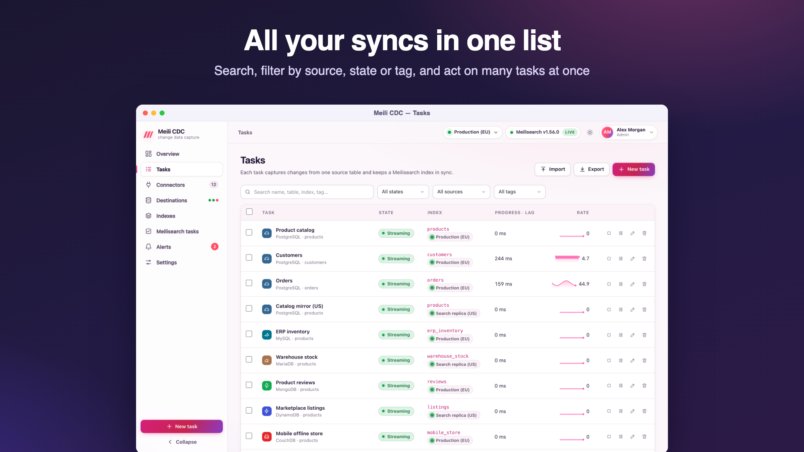
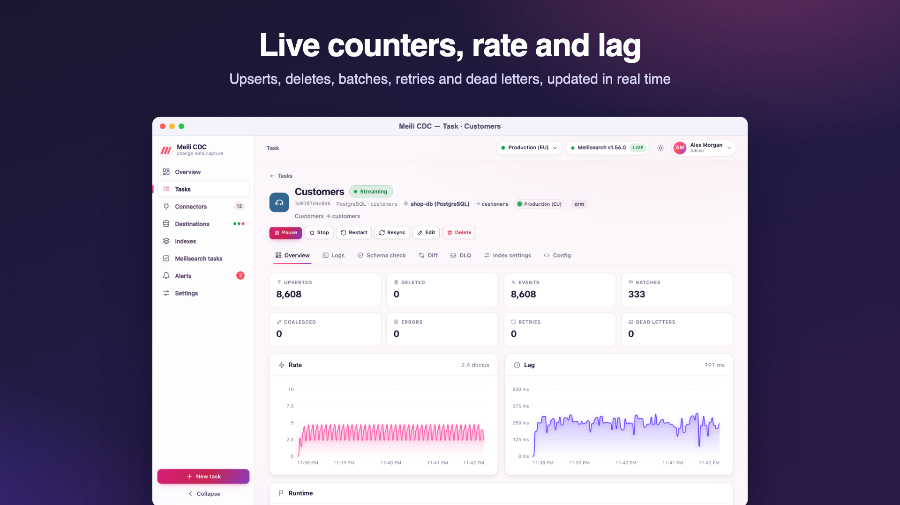

Operate tasks
Every task has a live state, a set of lifecycle actions and a detail page with its counters, logs and data-quality tools.

States
| State | Meaning |
|---|---|
stopped | Not running. The checkpoint is kept. |
starting | Connecting to the source, preparing the index and applying managed settings. |
snapshotting | Copying existing rows, with progress (done / total; the total is an estimate from the source). |
resyncing | A snapshot requested by Resync or by a lost source position. |
streaming | Applying changes in near real time. |
retrying | The pipeline failed with a transient error and restarts after a backoff (1 s, doubling up to 1 minute; the status shows the attempt and the wait). The backoff starts over after two minutes of healthy running. |
paused | Stopped by Pause. Like stopped, but kept paused across service restarts. |
held | A safety guard stopped the task before a mass delete or a truncate. It needs an operator. |
failed | A configuration error retrying cannot fix (bad credentials, missing table, wrong server settings, primary key mismatch). Fix it, then start again. |
completed | A snapshot-mode task finished its copy. |
When the service starts, tasks whose desired state is running start again from their checkpoints; paused tasks stay paused.
Actions
| Action | Role | What it does |
|---|---|---|
| Start / Resume | moderator | Runs the task from its checkpoint (a snapshot first if it never finished one). |
| Stop | moderator | Drains pending batches (up to CDC_STOP_TIMEOUT) and stops. Unconfirmed changes are replayed on the next start. |
| Pause | moderator | Like stop, but the state is paused. |
| Restart | moderator | Stop, then start. |
| Resync | moderator | Rebuilds the index from a fresh snapshot, then streams from the position captured before it. With zero-downtime resync the copy goes into a shadow index (<uid>__cdc_shadow_<time>) created with the live index's settings, which is swapped in when complete; search keeps using the old index meanwhile. Without it, the index is emptied first (in-place resync: clearing …) and fills up again. Refused for tasks in stream mode. |
| Reset checkpoint | moderator | Forgets the sync progress; the next start runs a full snapshot. A running task restarts at once. Documents are not deleted first (unless zero-downtime resync rebuilds into a shadow index), so documents of rows deleted meanwhile can remain; prefer Resync to rebuild. |
| Edit | admin | See Editing a task. |
| Delete | admin | See Deleting a task. |
Actions are available on the task page, in the task list, to the API (POST /api/v1/tasks/{id}/{action} with start, stop, pause, resume, restart, resync or reset-checkpoint) and to AI agents over MCP.
Automatic resync
When the source can no longer resume from the stored position (purged binlog, dropped or invalidated replication slot, expired DynamoDB shard, oplog rolled over, trimmed Redis stream, SQL Server cleanup), the task logs source position lost (…); starting a full resync and resyncs by itself, honouring zero-downtime resync.
Editing a task
Edit opens the wizard with the current definition (admin). Masked secrets are kept unless you replace them.
- A running task restarts with the new definition.
- Changing the source (type, connector, table, schema or database) or the index (uid or destination) clears the checkpoint: the next start runs a full snapshot (
source or index changed: checkpoint cleared, the next start runs a full snapshot). - Changing managed settings of a stopped task applies them to the index right away; a running task applies them when it restarts.
- The id cannot change.
Deleting a task
Deleting removes the definition, checkpoint, status, dead letters and diff report, and stops the task. The confirmation asks you to type the task id and offers two options:
- Drop source replication objects (checked by default; API
dropSource=true): for PostgreSQL, drops the replication slot and the generated publication, so the database stops retaining WAL. Other sources keep nothing on the server that needs dropping; a Kafka consumer group is left in place. - Also delete index (API
deleteIndex=<uid>, which must equal the task's index uid): deletes the Meilisearch index and its documents. Otherwise documents stay.
Batch actions
Select tasks in the list to start, stop, pause, resume, restart, resync or delete them together (moderator; delete needs admin). Up to 8 tasks are processed in parallel and the result of each is reported. A batch delete never drops source objects nor deletes indexes. API: POST /api/v1/tasks/batch with {"ids": [...], "action": "resync"}.
Import and export
- Export (admin) downloads every task definition as JSON, with passwords and secret keys masked.
- Import (admin) creates the tasks of a JSON array, stopped. Tasks whose id exists, or that fail validation, are reported and skipped. Replace masked secrets, or use connectors, before importing into another installation.
For tasks kept in Git, use the declarative tasks file instead.
The task page

| Tab | Contents |
|---|---|
| Overview | Counters (upserted, deleted, events, batches, errors, retries, dead letters, coalesced), rate and lag charts over the last ten minutes, snapshot progress, the checkpoint, in-flight batches, the last error. Webhook tasks also show the push endpoint. |
| Logs | The task's activity log (the last 1,000 entries, kept in memory), streamed live with auto-scroll. |
| Schema check | Source columns versus index fields and settings. See Data quality. |
| Diff | Document-level comparison with repair. See Diff and repair. |
| DLQ | Dead letters with replay and discard. See Dead letter queue. |
| Index settings | Desired versus live settings, drift and Apply. See Drift. |
| Config | The task definition as JSON (secrets masked), with links to edit it. |
Lag and rate
- Lag is the time between a change's commit in the source and its confirmation in Meilisearch. When a streaming task is idle, its lag returns to zero.
- Rate is documents per second, smoothed.
- Last sync is when Meilisearch last confirmed a batch of the task.